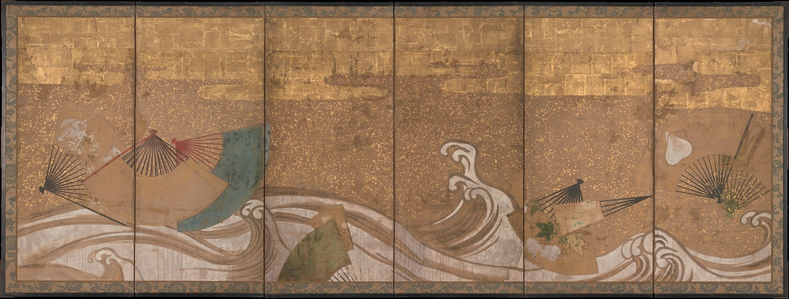

让一把扇子，漂过时间
水流有方向，扇面却各自停留：一张金色屏风，把漂浮画成了缓慢的呼吸。

先让目光漂起来
别急着找主角。先沿下缘的白色浪带，从左向右走一遍，再回头看那些朝向各异的扇子。水流把它们串起来，扇骨又把目光向不同方向拨开。整幅画的吸引力，就在这两种速度之间。
构图｜一条长线，几次停顿
屏风的横向比例适合展开一段观看时间。浪带连成低位的曲线骨架；扇子形成不等距的停顿，左侧相互叠压，中央上方则留出大片金地。六条分幅边界提供竖向拍点，水线却跨越它们继续行进。这里的留白并非空无：金色让停顿也有重量。
色彩｜温暖的底，凉意的插句
整体以金赭与褐色构成低纯度的暖类似色关系，米白浪带用明度对比提亮；青蓝扇面与局部暗绿给暖场降温。青蓝与金橙之间可理解为低纯度的近互补关系，但绿与金并非严格互补。小面积冷色之所以醒目，既来自冷暖差，也来自周围暖色的同时对比。建议配色：纸白 #F3EBDD、旧金 #B48B55、墨褐 #493E32、青灰 #527A7B；这是观图提炼，非原物测色。
光影｜画里的光，房间里的光
扇面的暗浅变化与交叠给出有限的体积提示，浪花主要靠浅深线带而非写实阴影起伏。金箔的亮度则会随真实环境的入射光和折角变化；静态照片只能保存其中一个状态。观看时可以想象自己侧移半步：光不是只被画出来，也由材料参与生成。
技法｜金地托住细线
馆方记录媒材为纸本水墨、设色与金箔。图中扇骨的放射细线与水纹的长曲线，建立了“短而密”与“长而流”的触感差异；小扇面又容纳了各自的图案。金地可见方形接缝与斑驳，但仅凭照片不能判定每处痕迹的制作或老化原因，也不能据此推定具体颜料。
作者背景｜保留一个诚实的空位
馆方未列出作者姓名，因此署名为佚名日本画者。作品属于江户时期；馆方把浮扇与流水的题材置于琳派相关视觉传统中，这不等于确认某位画者或师承。我们可以谈共享的装饰语言，同时让具体作者的身份保持开放。
为何动人｜漂浮也可以很安稳
在我的观看里，这是一幅关于轻与重的画。扇子原本贴近手与身体，如今被置于无人的水面；金地又把短暂的漂流固定成一面厚实的屏风。它让人想到某件被放下的小物，却不替我们规定故事。温柔来自这种距离：物还清楚，持有它的人已经退到画外。
带走一个练习｜让重复有呼吸
做一张横幅海报：用纸白约55%、旧金约30%、墨褐约10%、青灰约5%；用一条连续曲线串起三个到五个扇形模块，改变角度与间距，留出一个明显的空段。只在一个模块里放冷色。最后缩到手机宽度，检查曲线是否仍能带路、标题是否清晰。这是设计练习，不是作品原始配色比例。